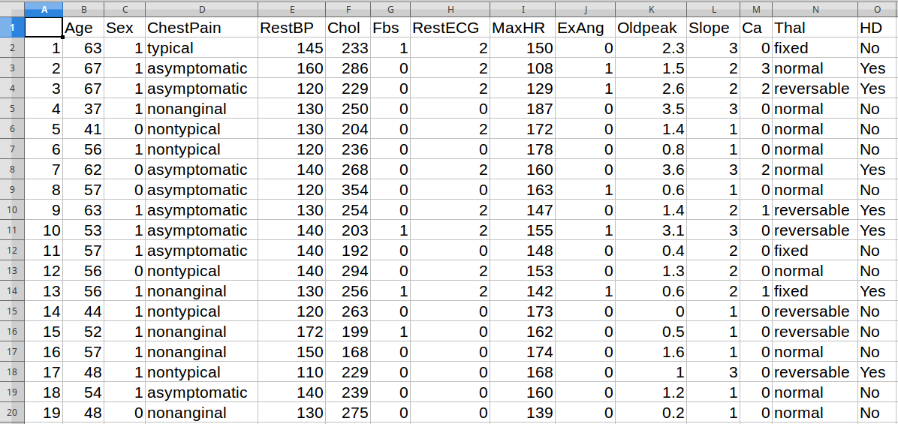

Lecture 5
Introduction to classification and
regression trees
Alex Gavryushkin
31 October 2017
Reminder
- All slides are online at
- You can follow this lecture:
- Lecture notes with embedded runnable code are* at
Some of the figures in this presentation are taken from "An Introduction to Statistical Learning, with applications in R" (Springer, 2013) with permission from the authors: G. James, D. Witten, T. Hastie, and R. Tibshirani.
[*Not quite. The lecture notes will be posted only before the actual lecture.]
Motivation slide
"Many scientists are very capable of analysing their data by themselves." — Nicolai Meinshausen, Professor of Statistics, ETH Zurich
Image: ETH Zurich. Complete interview "Our Master's programme is in great demand".
[I use these to share recent news in the area and to provide further motivation for the students to study the subject.]
Data Hitters
Problem
Can we predict player's salary?
What drives player's salary the most?
[In the actual lecture some other data set will be used, more relevant to the students.]
Can be seen as fitting a piecewise-constant model.
The goal is to minimise RSS
$$\sum_{i \in R_1}(y_i - \hat y _{R_1})^2 + \sum_{i \in R_2}(y_i - \hat y _{R_2})^2 + \sum_{i \in R_3}(y_i - \hat y _{R_3})^2$$
This week's tutorials
- Predict NZ house prices
- Predict cancer patients' life length expectancy
[Also shows the wide range of relevant applications.]
In reality, we don't know what the most significant predictors are, so we need to find them.
We have to consider all predictors and all possible values of the cutpoint for each of the predictors.
?
Details
For any $j$ and $s$, we define the pair of half-planes
$$
R_1(j, s) = \{X \mid X_j < s\}
$$
and
$$
R_2(j, s) = \{X \mid X_j \ge s\}
$$
and we seek the value of $j$ and $s$ that minimise the equation
$$
\sum_{i:~x_i \in R_1(j, s)}(y_i - \hat y_{R_1})^2 + \sum_{i:~x_i \in R_2(j, s)}(y_i - \hat y_{R_2})^2
$$
Dangers?
- Overfitting
- Missing out important predictors
(The bias-variance trade-off)
Why not fitting all trees?
- The number of full trees, as well as the number of subtrees of a full tree is bounded from below by $2^n$.
- $2^n$ is already way too many.
Assuming it takes one second to fit a tree:
|
17 minutes
|
on 10 predictors
|
|
12 days
|
on 20 predictors
|
|
34 years
|
on 30 predictors
|
|
35 million years
|
on 50 predictors
|
|
$4 \times 10^{13}$ billion years
|
on 100 predictors
|
Cost complexity pruning
Instead of considering every possible subtree and RSS, minimise
$$
\sum_{m = 1}^{|T|}\sum_{i:~x_i \in R_m}(y_i - \hat y_{R_m})^2 + \alpha |T|
$$
(same idea as in lasso)
Importantly, computing subtrees $T$ as a function of $\alpha$ is easy!
Data Heart

Problem
Can we predict whether the patient has heart disease?
Error functions
| Classification error rate |
$E = 1 - \max\limits_k(\hat p_{mk})$ |
| Gini index |
$G = \sum\limits_{k=1}^{K}\hat p_{mk}(1 - \hat p_{mk})$ |
| Entropy |
$D = -\sum\limits_{k=1}^K\hat p_{mk}\log\hat p_{mk}$ |
This week's tutorials
- Predict the 2017 general election preferences
- Predict tumour recurrence in patients treated for melanoma
Thanks for your attention!